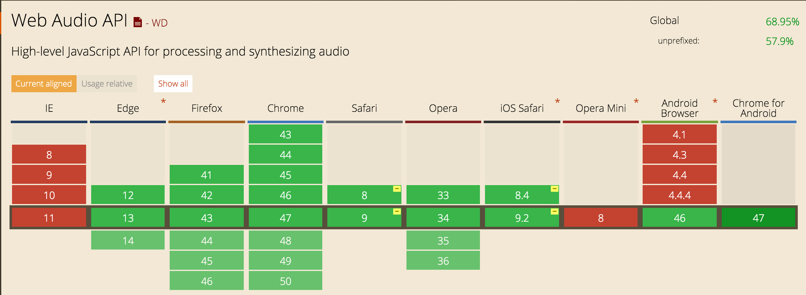

Ready?
Ladies & gentlemen...
Sound Synthesis with Web Audio
Agenda
- History of computer sound & music
- Web Audio API
- Full Web Audio Synth demo
Commodore 64
Commodore Amiga
PC - software mixing
VST Plugins
http://caniuse.com/#feat=audio-api
Web Audio API
- AudioContext
- AudioNodes
Audio routing graph
Sources
→
Effects
→
Destination
Example
Oscillator 1
↘
Oscillator 2
↗
Filter
→
Destination
Audio Nodes
Audio Sources
OscillatorNode
AudioBuffer
SourceNode
SourceNode
MediaStream
AudioSourceNode
AudioSourceNode
Effects
BiquadFilterNode
GainNode
DelayNode
StereoPannerNode
ConvolverNode
Etc...
Live coding!
var ac = new AudioContext();
var osc = ac.createOscillator();
osc.connect(ac.destination);
osc.start();
osc.stop();
osc.disconnect();
Thank you


Contributions are welcome